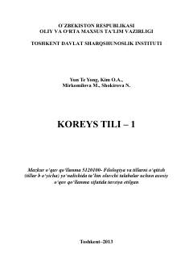

KTKoreys tilini o'rganuvchi talabalar uchun mo'ljallangan boshlang'ich darajadagi o'quv qo'llanma.
Ushbu o'quv qo'llanma Toshkent davlat sharqshunoslik instituti talabalari uchun koreys tilining fonetikasi, leksikologiyasi va morfologiyasini o'rgatishga mo'ljallangan. Kitob 25 ta darsdan iborat bo'lib, boshlang'ich bosqichdagi talabalar uchun grammatika, lug'at va kundalik muloqot ko'nikmalarini rivojlantirishni maqsad qilgan.